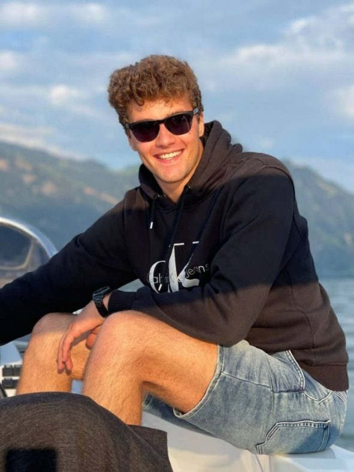

Über mich
Herkunft, Sprachen und Vereine
Persönlich
Ich bin im schönen Nidwalden geboren, zog im Alter von drei Jahren in die Stadt Luzern und später in die Gemeinde Horw, wo ich noch heute wohne. Ich bin Schweizer Staatsbürger und besitze den Führerausweis der Kategorien B, CE und D1E.
Einsatzbereitschaft beweise ich nicht nur im beruflichen Umfeld, sondern auch beim Sport. So bin ich seit mehreren Jahren Mitglied im Skiclub Horw, Aktivmitglied des Pistolenclubs Horw und Mitglied der Offiziersgesellschaft der Zentralschweiz (SOLOG).
Sprachen
Meinen russischen und ukrainischen Wurzeln verdanke ich meine fliessenden Sprachkenntnisse in Russisch und Ukrainisch. Meine Umgangssprache ist Deutsch, zudem spreche und schreibe ich Englisch (B1/B2) und Französisch (A2).
Vereine
Mitgliedschaften
- seit 2008Tennisclub Horw
- seit 2010Skiclub Horw
- seit 2020Offiziersgesellschaft der Zentralschweiz (SOLOG)
- AktivmitgliedPistolenclub Horw
- MitgliedAbschlussklasse Gebäudetechnik 2025
Ämter
Vereinsrevisor der Abschlussklasse Gebäudetechnik 2025
